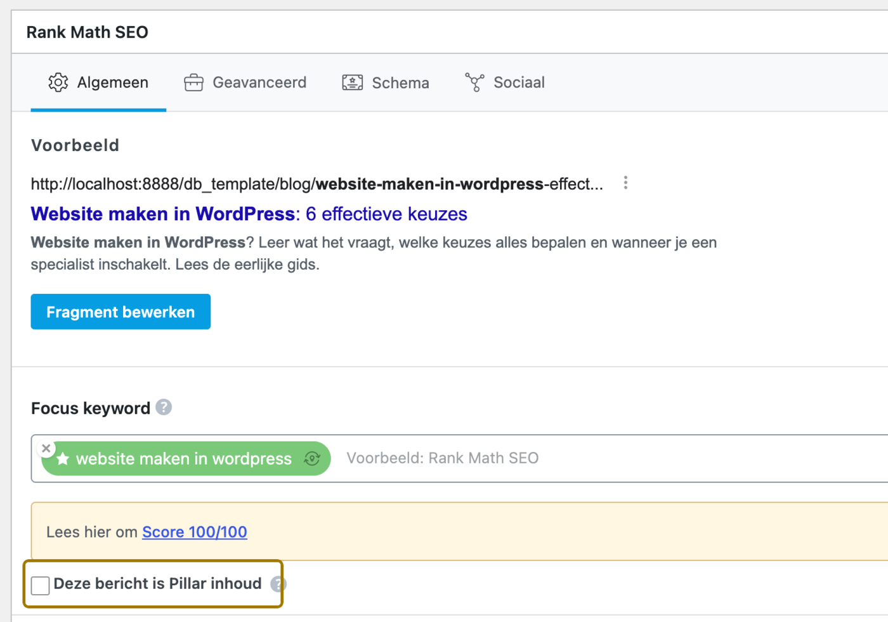

Digitale Bazen · Handleiding
Werken met de Generator in WordPress
De Generator schrijft complete blogartikelen voor je website: tekst, tussenkoppen, afbeeldingen, SEO-velden en veelgestelde vragen. Jij bepaalt waarover, jij keurt goed, jij publiceert. Deze handleiding loopt de hele route met je door, van het instellen tot het publiceren van je eerste artikel.
De gouden regel. De Generator publiceert nooit zelf. Alles wat hij maakt komt als concept in je Blogs te staan. Er verschijnt niets op je website zonder dat jij op Publiceren klikt.
Alles wat er zo uitziet is een knop, veld, tab of menu-item dat je letterlijk zo in WordPress terugvindt.
Deel één · Voordat je begint
In de linkerbalk van WordPress staat een menu-item Generator. Daaronder vind je drie schermen, en samen vormen ze je werkplek:
| Scherm | Waarvoor | Hoe vaak |
|---|---|---|
| Creatie | Eén blog laten schrijven | Elke keer |
| Plan | Bepalen wélke blogs je maakt, en in welke volgorde | Eens per onderzoek |
| Instellingen | Wie je bent, hoe je schrijft, wat de Generator mag | Eenmalig, daarna bijschaven |
De Generator verzint de opbouw niet uit het niets. Hij leest de blokken die jouw thema echt heeft en vult precies de velden die daarbij horen. Daardoor ziet een gegenereerd artikel eruit als een artikel dat een redacteur met de hand heeft opgebouwd, en niet als een lap tekst.
Dit hoofdstuk is de belangrijkste van de hele handleiding. Het verschil tussen een artikel dat klinkt als “een willekeurig bedrijf” en een artikel dat klinkt als jóuw bedrijf, zit vrijwel volledig in deze instellingen. Je vult ze één keer in en schaaft ze daarna bij op basis van wat je terugkrijgt.
Je vindt ze onder Generator › Instellingen, verdeeld over tabbladen aan de linkerkant. Vergeet niet onderaan op Opslaan te klikken; zolang er wijzigingen openstaan zie je bovenin het label Niet opgeslagen.
Heb je weinig tijd? Vul dan in deze volgorde in. De opbrengst neemt per stap af:
1. Site-context, met een expliciet lijstje “wat niet doen” · 2. Referentie-posts · 3. Bedrijf en Doelgroep · 4. Stijlregels
Bedrijfsnaam, branche, wat je levert, je USP's en je concurrenten. Die laatste worden nooit in een artikel genoemd; ze helpen de Generator alleen om jouw sterke punten scherper neer te zetten.
Wees concreet bij Diensten / producten. Dit voorkomt dat er dingen beloofd worden die je niet doet.
Voor wie schrijf je, welke bezwaren moet je wegnemen, waar lopen ze tegenaan, en waar letten ze op als ze kiezen. Onderaan kies je het Taalniveau: gemiddeld, eenvoudig of expert.
Bezwaren en frustraties zijn de sterkste velden van dit tabblad. Een artikel dat onderweg terloops een twijfel wegneemt (“dat kan ik zelf ook wel”) leest als geschreven door iemand die de markt kent. Zonder die input blijft het bij algemeenheden.
Vier velden, elk met een eigen rol:
Concrete verboden werken veel beter dan algemene wensen. “Noem geen levertijden en geen prijzen” levert meer op dan “wees voorzichtig met beloftes”.
Drie vinkjes die de tekst scherper maken: expliciet een standpunt innemen, met praktijkvoorbeelden werken, en ook nadelen of beperkingen benoemen. Dat laatste voelt tegennatuurlijk, maar het is precies wat een tekst betrouwbaar maakt.
Aan of uit, hoeveel links per blog (2 tot 5, drie is het advies) en uit welke soorten pagina's geput mag worden. De Generator zoekt zelf de meest relevante pagina's erbij.
Of de Generator externe bronnen mag voorstellen, en hoeveel (2 tot 5, vier is het advies). Hij plaatst ze niet zelf: je krijgt ze als suggestie te zien bij het nakijken en kiest er zelf uit. Zie hoofdstuk 6.
Drie mogelijkheden:
| Keuze | Wat je krijgt | Kosten per blog |
|---|---|---|
| Stockfoto's | Echte foto's van Pexels, met Unsplash als reserve | Gratis |
| AI: alleen coverfoto | Gegenereerde coverfoto, stockfoto's in de tekst | ± $0,04 |
| AI: alle afbeeldingen | Alles gegenereerd, in één consistente stijl | ± $0,15 – $0,35 |
Kies je voor AI, vul dan ook Beeldstijl in. Die beschrijving wordt vóór elke beeldopdracht geplakt, zodat alle afbeeldingen op elkaar lijken. Bijvoorbeeld: professionele B2B-bedrijfsfotografie, warm natuurlijk licht, ingetogen kleuren, echte mensen op de werkvloer.
Mislukt het genereren van een afbeelding, dan pakt de Generator automatisch een stockfoto. Een blog komt dus nooit zonder beeld te staan.
Onder Layouts vink je aan welke blokken gebruikt mogen worden. Standaard staat alles aan, behalve quote- en testimonial-achtige blokken; die zijn permanent uitgesloten.
Onder Layout-calibratie zit een knop Calibreren. Daarmee bekijkt de Generator je thema en schrijft per blok op hoe het eruitziet en wanneer je het inzet. Je leest het na, past aan waar nodig en slaat op. Doe dit één keer bij aanvang, en opnieuw als je thema verbouwd wordt.
Instellingen is zichtbaar voor iedereen die blogs mag publiceren, dus ook voor redacteuren — net als Creatie en Plan. Eén uitzondering: het tabblad API-keys zie je alleen als beheerder. Sla je als redacteur de instellingen op, dan blijven die sleutels ongemoeid.
Deel twee · De werkwijze
Het zoekwoordenonderzoek is je grondstof: de lijst met zoektermen waar je op gevonden wilt worden, meestal met maandvolume erbij. Je uploadt hem één keer; daarna kiest de Generator er telkens uit.
Bij voorkeur onder Generator › Instellingen › Zoekwoorden. Daar wordt het onderzoek bewaard, zodat je het terugvindt in zowel Creatie als Plan.
Op het scherm Creatie kun je ook eenmalig een bestand inlezen zonder het te bewaren. Handig om iets snel te proberen, maar zo'n eenmalige upload verschijnt niet in het Plan.
Toegestaan zijn .xlsx, .xls, .csv en .ods. Je browser leest het bestand en zet het om; er hoeft niets geïnstalleerd te worden. Maximaal 1 MB.
| Kolom | Nodig? | Waarvoor |
|---|---|---|
| Zoekwoord | Verplicht | De zoekterm zelf |
| Maandelijks volume | Optioneel | Bepaalt prioriteit en welke term de pillar wordt |
| Pagina | Optioneel | Groepering in de keuzelijst |
| Onderwerp | Optioneel | Bepaalt de secundaire zoekwoorden per blog |
| Concurrentie | Optioneel | Context voor het Plan |
| CPC laag / CPC hoog | Optioneel | Context voor het Plan |
Vul Onderwerp zo goed mogelijk in. Alle zoekwoorden met hetzelfde onderwerp worden automatisch de secundaire zoekwoorden van elkaar, en die verwerkt de Generator natuurlijk in de tekst. Zonder onderwerp krijg je per artikel één los zoekwoord.
Geen onderzoek bij de hand? Gebruik Download lege template (.csv) op het Creatie-scherm voor een bestand met de juiste kolomkoppen.
De koppen worden automatisch herkend, ook als er lege regels of samenvattingsregels boven staan — zoals bij een export uit Google Ads.
Je ziet een tabel met links het veld dat de Generator verwacht en rechts de kolom uit jouw bestand. Corrigeer wat niet klopt. Alleen Zoekwoord is verplicht.
Klap Preview eerste 5 rijen open. Hier zie je meteen of er iets misgaat, nog vóór je uploadt.
Totaalregels worden overgeslagen en notaties als [zoekterm] of +zoekterm worden opgeschoond.
Er is altijd maar één onderzoek tegelijk. Upload je een nieuw bestand, dan vervangt het de zoekwoorden van het bestaande onderzoek.
Goed nieuws: je Plan, de statussen en de koppelingen met al gemaakte artikelen blijven daarbij gewoon staan. Een nieuwe upload is dus een verversing, geen schone lei. Zoekwoorden die je al hebt gemaakt houden hun status Gegenereerd of Gepubliceerd, ook als je later opnieuw laat analyseren.
Zonder plan schrijf je per los zoekwoord een blog. Dat gaat drie keer mis: je maakt artikelen voor zoektermen die eigenlijk een dienstenpagina horen te zijn, je maakt twee bijna identieke artikelen die met elkaar concurreren, en er ontstaat geen samenhang tussen artikelen over hetzelfde thema.
Het scherm Plan lost dat op. Eén klik zet je zoekwoordenlijst om in een contentplan.
Klik op Analyseer onderzoek. Bij een grote lijst duurt dat een paar minuten; je ziet de voortgang lopen. Als het klaar is ververst de pagina zichzelf.
Een analyse telt niet mee voor je dagelijkse limiet van tien generaties. Analyseren is geen schrijven, dus je kunt gerust opnieuw analyseren als je onderzoek is bijgewerkt.
Elk zoekwoord krijgt eerst een zoekintentie:
| Intentie | Wat de zoeker wil | Wat je ermee doet |
|---|---|---|
| Informatief | Leren, vergelijken, oriënteren | Hier maak je een blog van |
| Commercieel | Nu een leverancier of offerte | Hoort op een vaste dienstenpagina |
| Lokaal | Een aanbieder in de buurt | Hoort op een lokale landingspagina |
De informatieve zoekwoorden worden gegroepeerd in clusters rond hetzelfde thema. Binnen elk cluster krijgt elk zoekwoord een rol:
Binnen een cluster maak je altijd eerst de pillar. Zolang die er niet is, staan de Genereer-knoppen van de supporting-artikelen uitgeschakeld. Dat is met opzet: zonder pillar is er geen artikel om naartoe te linken.
Werk je met Rank Math? Zet dan bij het publiceren van een pillar ook Deze bericht is Pillar inhoud aan in de Rank Math SEO-box onder de editor. Rank Math zet dat artikel daarna bovenaan in de linksuggesties bij je andere blogs, zodat de supporting-artikelen er makkelijk naartoe linken.

Onder elk zoekwoord staat een ingeklapt kopje Hoek. Daar staat de invalshoek die de Generator voor dat artikel voorstelt, en waar hij de lezer naartoe leidt.
Het verschil is groot. Neem het zoekwoord snelheid website testen:
Je kunt de hoek gewoon overschrijven. Klap Hoek open, pas de tekst aan, klik ergens anders en het is opgeslagen. Doe dit vóórdat je genereert.
Als je één ding aanpast in het Plan, maak het dan de hoek. Het zoekwoord bepaalt waarop je gevonden wordt; de hoek bepaalt of de lezer daarna verder klikt.
Bovenaan het Plan staat een lijstje met de beste volgende artikelen, met per regel de reden erbij. De redenering: maak eerst een cluster áf waar je al aan begonnen bent, en start daarna het cluster met de meeste zoekvolume-waarde. Elke regel heeft een directe Genereer-knop.
Twijfel je waar je moet beginnen? Pak gewoon de bovenste.
Ga naar Generator › Creatie, of klik een Genereer-knop in het Plan. Kom je vanuit het Plan, dan staat het zoekwoord al klaar en spring je meteen door naar stap 3, mét de plan-context erbij: het cluster, de rol, de link naar de pillar en de instructie om overlap met bestaande artikelen te vermijden.
Twee mogelijkheden:
Kies uit de lijst, gegroepeerd per pagina. Daaronder verschijnen de secundaire zoekwoorden die meegenomen worden: alle andere termen met hetzelfde onderwerp.
Je kunt direct op Genereer blogpost klikken. Wil je bijsturen, klap dan eerst Geavanceerd (optioneel) open:
| Veld | Wanneer gebruik je het |
|---|---|
| Funnel-fase | Om te bepalen hoe verkoopgericht het artikel mag zijn. Top = uitleggen zonder te verkopen, Middle = opties afwegen, Bottom = vertrouwen en een duidelijke actie. |
| Awareness-niveau | Hoeveel de lezer al weet. Kent hij het probleem nog niet, dan begin je met een herkenbare situatie in plaats van met de oplossing. |
| Belangrijke punten | Wat er per se in moet. Bijvoorbeeld: alleen WordPress, vaste prijs per maand, 24/7 support. |
| Onderwerpen die vermeden moeten worden | Wat er absoluut niet in mag. Bijvoorbeeld: geen prijsindicaties, geen levertijden. |
| Wat moet deze blog beter doen? | Jouw voorsprong op de huidige top 3 in Google. Bijvoorbeeld: minder jargon, met een concrete checklist, sneller ter zake. |
| Verplicht linken naar | Pagina's die zeker gelinkt moeten worden. Ze krijgen voorrang boven de automatische selectie. |
| Extra instructies | Alles wat je voor déze ene blog kwijt wilt en niet in de algemene instellingen thuishoort. |
Wat je hier invult geldt alleen voor deze ene generatie. Merk je dat je steeds hetzelfde intypt? Verhuis het dan naar Instellingen, dan geldt het voortaan overal.
Er verschijnt een voortgangsbalk met de echte stand van zaken: Zoekwoord-context verzamelen → Generator schrijft je blog → Output valideren → Afbeeldingen ophalen → Coverfoto kiezen → Blocks invullen → Afronden.
Reken op één tot drie minuten. Het schrijven gebeurt op de achtergrond, dus een trage verbinding of een dichtgeklapte laptop breekt het proces niet af.
Sluit je het tabblad, dan loopt de generatie gewoon door. Je vindt het concept daarna terug onder Blogs. Je verliest alleen de voortgangsbalk uit het oog.
Je krijgt een kaartje met het post-nummer, het aantal gebruikte tokens en twee knoppen: Open draft in nieuwe tab en Preview. Daarnaast zie je hoeveel generaties je vandaag nog over hebt.
Een gegenereerd artikel is een goed eerste concept, geen eindproduct. Reken op tien tot twintig minuten nakijken. Loop deze lijst af.
Rechts in het scherm zit het RankMath-paneel met de score. De Generator vult die velden al in, maar loop ze na:
RankMath telt uitsluitend het exacte zoekwoord. Synoniemen en verbuigingen tellen niet mee voor die meter, hoe goed ze ook lezen. Vandaar dat de Generator het zoekwoord vaker letterlijk laat terugkomen dan je misschien zou verwachten.
In de rechterkolom staat het blok AI — Externe bronnen met drie tot vijf voorstellen. Bij elke link is gecontroleerd of hij bereikbaar is:
| Teken | Betekenis | Doen |
|---|---|---|
| ✓ | Bereikbaar | Veilig te gebruiken |
| ↪ | Doorgestuurd | Even openen en kijken waar hij uitkomt |
| ? | Controle geblokkeerd | Zelf openen; veel grote sites weigeren zo'n controle |
| ⏱ | Duurde te lang | Zelf openen |
| ✗ | Onbereikbaar | Niet gebruiken, klik Verwerpen |
Vink aan wat je wilt en klik Geselecteerde invoegen. De link wordt in de lopende tekst geplaatst.
Zag de Generator onderweg iets dat niet lukte, dan meldt hij dat bij het resultaat. Meestal is het klein werk: een blok waar één punt te weinig in staat, of een afbeelding die niet gevonden werd. Beginnen ze met “Aanvullen in editor”, dan is het concept gewoon bruikbaar en vul je het in de editor even aan.
Controleer categorie, eventuele tags en de datum.
Dit is het enige moment waarop iets live gaat, en het is altijd een mens die erop klikt.
Bekijk hem één keer als bezoeker: kloppen de blokken, staan de afbeeldingen goed, werken de links.
Zodra je publiceert springt de status in het Plan automatisch van Gegenereerd naar Gepubliceerd. Was het een pillar, dan komen op datzelfde moment de supporting-artikelen van dat cluster vrij.
Staat er een blok met veelgestelde vragen in het artikel, dan wordt de FAQ-opmaak voor Google automatisch meegestuurd. Je hoeft daar niets voor te doen. Google toont die vragen soms direct in de zoekresultaten.
De verleiding is groot om in week één twintig artikelen te maken. Doe dat niet. De kwaliteit van artikel twintig hangt af van wat je leert van artikel één tot en met vijf.
| Wanneer | Wat je doet |
|---|---|
| Week 1 | Instellingen invullen. Onderzoek uploaden. Plan analyseren. Eén pillar genereren en die grondig nakijken. |
| Week 1, daarna | Verwerk wat je bij het nakijken tegenkwam in de instellingen. Genereer diezelfde pillar nog eens en vergelijk. |
| Week 2 | Twee tot drie artikelen: de pillar en de eerste supporting-artikelen van hetzelfde cluster. Zo bouw je aan één thema. |
| Week 3 en verder | Twee tot vier per week, telkens het cluster afmaken voordat je een nieuw cluster begint. Volg de aanbevelingen op het Plan. |
Google beloont sites die één onderwerp compleet behandelen. Vijf artikelen over hetzelfde thema, onderling gelinkt, doen meer dan vijf artikelen over vijf losse onderwerpen. Daarom stelt het Plan altijd voor om eerst af te maken waar je aan begonnen bent.
Deel drie · Naslag
| Onderwerp | Waarde | Toelichting |
|---|---|---|
| Blogs per dag | 10 per gebruiker | Lopende generaties tellen mee. De teller loopt per kalenderdag. |
| Plan-analyses | Onbeperkt | Tellen niet mee voor de daglimiet. |
| Duur per blog | 1 – 3 minuten | Langer bij zeer uitgebreide artikelen. |
| Lengte per blog | 2.500 – 3.200 woorden | Smalle onderwerpen mogen korter, ongeveer 1.500 – 2.000. |
| Bestandsgrootte onderzoek | Max. 1 MB | Ruim voldoende voor enkele duizenden zoekwoorden. |
| Zoekwoorden per analyse | Max. 400 | Grote lijsten worden in delen verwerkt. |
| Referentie-posts | Max. 5 | Meer voegt weinig toe. |
De tekst wordt geschreven door Anthropic Claude; die kosten lopen via de afspraken met Digitale Bazen. Bij afbeeldingen kun je zelf sturen:
Voor een pilot is AI: alleen coverfoto vaak de mooiste balans: een eigen, herkenbare coverfoto tegen verwaarloosbare kosten, en gratis stockfoto's in de tekst.
Vrijwel alle meldingen zijn onschuldig en zelf op te lossen. Hieronder de meldingen die je in de praktijk tegenkomt.
| Melding | Wat er aan de hand is | Wat je doet |
|---|---|---|
| Je hebt je dagelijkse generatie-limiet bereikt | Tien blogs vandaag, inclusief nog lopende. | Wacht tot morgen, of vraag Digitale Bazen de limiet te verhogen. |
| AI gaf geen geldig JSON-object terug | Het antwoord kwam beschadigd binnen. Komt zelden voor. | Klik gewoon opnieuw op Genereer blogpost. Dit lost zichzelf vrijwel altijd op. |
| Het AI-antwoord werd afgekapt | Het artikel werd zó lang dat het niet meer paste. | Probeer opnieuw. Blijft het gebeuren, geef dan een smaller onderwerp op of meld het bij ons. |
| Duurt onverwacht lang | De voortgangsbalk gaf het op, maar het schrijven loopt op de achtergrond mogelijk door. | Kijk eerst onder Blogs of het concept er alsnog staat. Zo niet, probeer opnieuw. |
| Job vastgelopen | De generatie is halverwege gestopt. | Opnieuw proberen. Gebeurt het vaker op een dag, meld het dan. |
| AI-output is onbruikbaar | Er kwam te weinig bruikbaars terug om een concept van te maken. | Opnieuw proberen. Blijft het misgaan bij hetzelfde zoekwoord, kies dan een andere hoek in het Plan. |
| Nonce ongeldig. Herlaad de pagina. | Het scherm stond te lang open. | Ververs de pagina en probeer opnieuw. |
| Anthropic API-sleutel ontbreekt | De sleutel staat niet ingevuld. | Dit is voor Digitale Bazen; geef het bij ons door. |
| Melding | Wat je doet |
|---|---|
| Bestand is te groot (max 1 MB) | Verwijder overbodige kolommen of splits de lijst. |
| Alleen .csv bestanden zijn toegestaan | Je browser had het bestand nog niet omgezet. Ververs de pagina en probeer opnieuw; wacht bij een groot bestand even tot Bestand lezen… weg is. |
| Geen zoekwoorden gevonden in het bestand | De kolom Zoekwoord is niet gekoppeld, of hij is leeg. Controleer de mapping. |
| Selecteer een bron-kolom voor “Zoekwoord” | Kies in de mapping-tabel welke kolom je zoektermen bevat. |
| Opgeslagen rijen zijn corrupt | Upload het onderzoek opnieuw. |
| Situatie | Wat je doet |
|---|---|
| De Genereer-knop is grijs | Dat is de pillar-eerst-regel. Maak eerst de pillar van dat cluster; de rest komt daarna vanzelf vrij. |
| Geen zoekwoordenonderzoek om te analyseren | Upload er eerst één onder Instellingen › Zoekwoorden. |
| De planner gaf geen geldige zoekwoorden-lijst terug | Klik nog eens op Analyseer onderzoek. |
| Een zoekwoord staat in het verkeerde cluster | Pas de Hoek aan, of gebruik bij het genereren het veld Extra instructies om bij te sturen. |
| Ik mis een zoekwoord in het plan | Kijk onder de pillar bij de gebundelde zoektermen. Wil je er tóch een eigen artikel over, klik dan + verwant artikel. |
| Situatie | Wat je doet |
|---|---|
| Geen afbeelding gevonden via Pexels of Unsplash | Het onderwerp was te specifiek. Kies zelf een beeld uit de mediabibliotheek, of zet de afbeeldingsbron tijdelijk op AI. |
| Er staat tekst in een gegenereerde afbeelding | Genereer het artikel opnieuw, of vervang alleen dat beeld met de hand. |
| Er is geen uitgelichte afbeelding | De Generator meldt dit als waarschuwing. Stel er zelf één in bovenin het bewerkscherm. |
Bij een melding over API-sleutels, over ACF-veldgroepen, of als dezelfde fout drie keer achter elkaar terugkomt. Stuur dan de exacte tekst van de melding mee en het zoekwoord waarmee je bezig was.
| Onderwerp | Jij | Digitale Bazen |
|---|---|---|
| Installatie en updates | — | ✓ |
| API-sleutels | — | ✓ |
| Koppeling met je thema en blokken | — | ✓ |
| Layout-calibratie na een verbouwing | — | ✓ |
| Bedrijf, doelgroep en tone of voice invullen | ✓ | Denkt mee |
| Zoekwoordenonderzoek aanleveren | ✓ | Kan het leveren |
| Plan analyseren en hoeken bijsturen | ✓ | Denkt mee |
| Artikelen genereren | ✓ | — |
| Nakijken en publiceren | ✓ | — |
Loop je vast of twijfel je over de kwaliteit van wat je terugkrijgt? Neem contact op met je contactpersoon bij Digitale Bazen. Stuur bij een probleem altijd mee: het zoekwoord waarmee je bezig was, de exacte melding die je zag, en of het één keer of vaker gebeurde.
Herkenbaarheid van de toon, de bruikbaarheid van het Plan, en hoeveel tijd het nakijken je kost. Houd dat laatste losjes bij; het is het beste ijkpunt voor of dit werkt.